Mapping the Field
Learnings from a Quarter-Century of Consumer Technology Research and the Case of Generative AI
Psychology of AI Lab Presentation
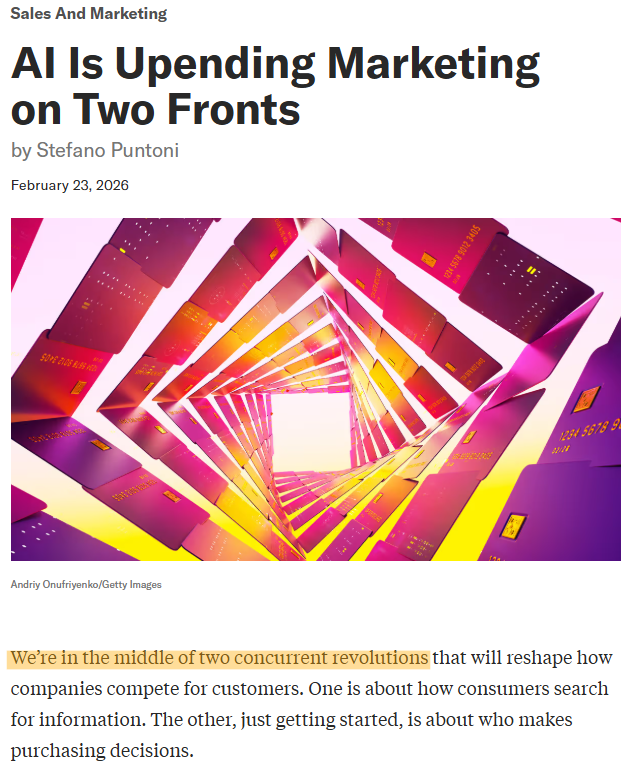
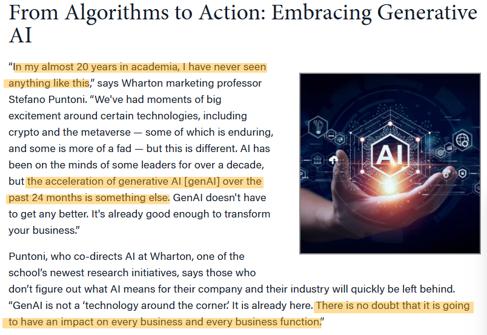
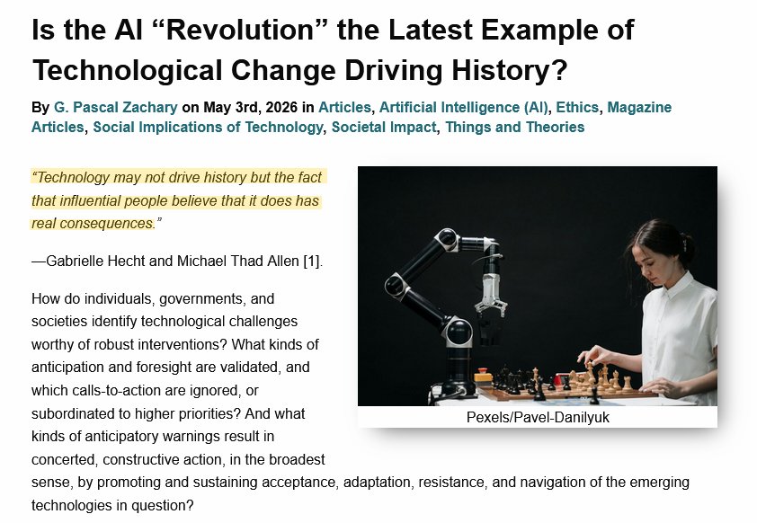
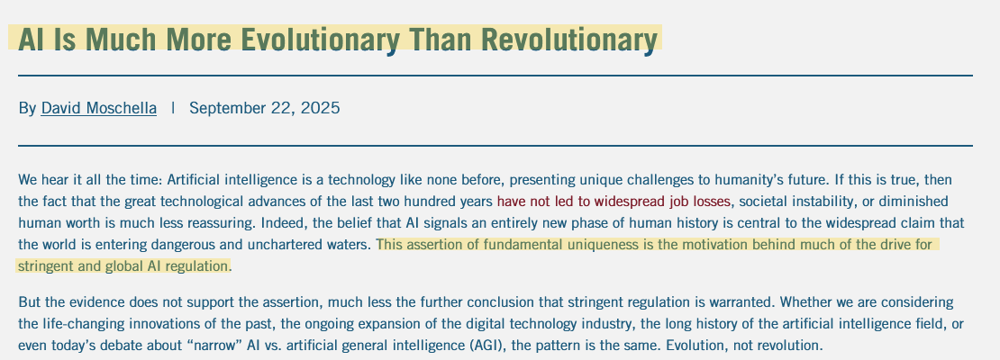
- Over the past quarter-century, research on consumer technologies has increased, to the extent that in 2026, 40% of publications in the top seven marketing journals are empirical papers concerning consumer technologies to some extent
- The increased interest in CT is not as new, but in 2022, something happened
- Ever since, we hear a lot of voices from both academics, the public, and practitioners, that Generative AI, claiming that Generative AI fundamentally disrupts our research practices, consumers’ experiences, and marketers’ strategies
The Evolving Field of Consumer Technology Research
- more research on consumer technologies (de Bellis et al., 2026; Hoffman et al., 2022; Kahn & Wilson, 2025)
- faster pace of consumer technologies being adopted (Hoffman et al., 2022)
- AI as the latest technology in line:
- increase of publications on AI (Riandhi et al., 2025)
- increase of submissions with AI (Gartenberg et al., 2026)
- increase of editorials and special issues on topic (Bart et al., 2026; Wang, 2026)
Why should we care?
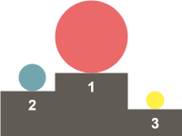
Attention Allocation – Relevance
- limited attention in a fast-moving field (Hoffman et al., 2022)
- different pressures shaping the space (Ellison, 2002; Gartenberg et al., 2026; Harrison et al., 2017)
Intellectual Connection – Accumulation
- cumulative vs. isolated clusters of research (Aria & Cuccurullo, 2017)
- shared vs. specialized intellectual foundation / theorizing (Small, 1980)
Public Concern – Impact
- overall alignment with public concern (de Bellis et al., 2026; Hoffman et al., 2022)
- temporal alignment with public concern (de Bellis et al., 2026; Hoffman et al., 2022)
Objectives and Research Questions
1
How has consumer research allocated attention across consumer technologies over time?
2
How is research on different consumer technologies intellectually connected?
3
How does academic attention to consumer technologies align with what concerns the public?
… and does research on Generative AI differ from these patterns?
Our Approach
1 – Modeling the Field
Identify empirical consumer technology research
semantic Modeling and clustering of consumer technologies
2 – Structuring the Field
Historiographic analysis of consumer technology research
Co-citation analysis of consumer technology research
3 – Contrasting the Field
External benchmarking against media attention as a proxy for public concern
1 – Modeling the Field
Identification of Articles
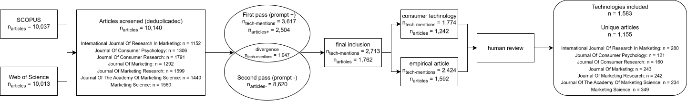
{kind=link}
{kind=link}
Journal Profiles

- First panel: distribution of all 1,583 consumer technology mentions across the 16 clusters, pooled over the 7 journals, this is the baseline every journal is compared against
- Journal panels: for each journal, 20,000 Dirichlet draws with the corpus-wide distribution as prior and the journal’s own counts as data, point is the posterior median of journal share minus corpus share, line is the 95% credible interval
- Full color where the interval excludes zero (credibly over- or under-represented), faded otherwise
- Journal profiles are largely in line with the corpus, most intervals cover zero
- MkSc holds credibly more than its share of Auctions & Pricing, Streaming, Audio & Video and E-Commerce, credibly less of Generative AI, AR, VR & Robots and Smartphones & Apps
- IJRM holds credibly more of Crypto & Fintech and Smartphones & Apps, descriptively but not credibly more of Generative AI
- JCP falls credibly below its expected share for Social Media, Gaming & Digital Platforms and Streaming, Audio & Video, and credibly above for Algorithms & Recommendations
- JCP is the smallest corpus (120 mentions), so single articles move the interval, and social media in JCP is often a context rather than the named technology in the abstract
- Under-representation is rarer than over-representation across all journals
The Case of Generative AI
Generative AI is…
- … taking up more attention than any other cluster
- 225 mentions, most within the last 4 years
- 14.1% share overall (N°1)
- 30.2% share in 2026 (N°1)
- … not slowing down
- Projected trajectory still rising
{kind=link}
2 – Structuring the Field
Historiographic Analysis – Cluster Perspective

Historiographic Analysis – Journal Perspective

Co-Citation Analysis

The Case of Generative AI
Generative AI is…
- … highly self-referential for its size:
- 56.1% of citations come from within the cluster (break in cluster size \(\rightleftarrows\) self-referential relationship)
- … yet getting more attention from other clusters
- Highest cited cluster for 3 / 15 clusters1
- Cited more than average for 11 / 15 clusters1
- Most citable cluster overall
- … adopted to the agenda of all journals
- Prevalent topic across all 7 journals
- … strongly focused on algorithm & AI perception and acceptance
- 45.9% of top 500 reference citations
1Excluding self-citations
3 – Contrasting the Field
{kind=link}
Temporal Lags between Academic and Public Attention

- High positive at positive lag, media rises and academic attention rises some years later
- High positive at negative lag, academic rises and media attention follows some years later
- High negative at positive lag, media attention rises and academic attention falls afterwards, the two move in opposite directions with media first
- High negative at negative lag, academic attention rises and media attention falls afterwards, opposite movement with academia first
- High monotone: It means the two series share a slow common trend rather than a datable lead-lag relation. If correlation stays near the same high value at every lag, shifting by five years in either direction barely changes the fit, so no lag is identified — the flat curve carries no timing information.
The Case of Generative AI
Generative AI…
- … is getting attention everywhere, but more academic than media attention
- Highest representation gap
- … and media move together
- High cross-correlation across the board
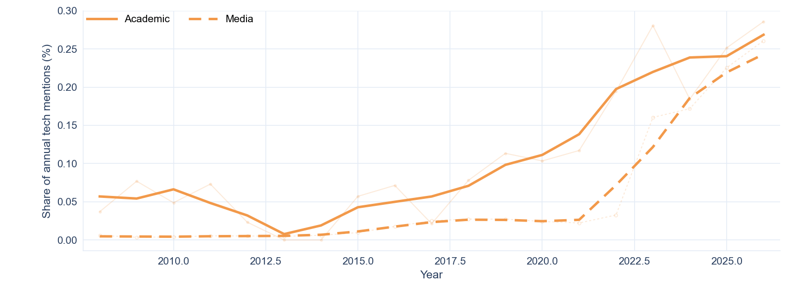
| Technology cluster | -5 | -4 | -3 | -2 | -1 | 0 | 1 | 2 | 3 | 4 | 5 | Best lag |
|---|---|---|---|---|---|---|---|---|---|---|---|---|
| Generative AI | 0.727 (p = .071) | 0.824 (p = .067) | 0.862 (p = .062) | 0.852 (p = .059) | 0.876 (p = .056) | 0.873 (p = .053) | 0.741 (p = .056) | 0.726 (p = .059) | 0.657 (p = .062) | 0.905 (p = .067) | 0.891 (p = .071) | 4 |
Mapping the Field
Our Results
Attention Allocation
- Mapping a quarter-century of consumer technology research into technology clusters
- Providing a baseline to contrast novel technologies against (in our case Generative AI)
Intellectual Connection
- Constructing connections within and across consumer technologies, showing systematic patterns of how attention and time shape connectedness and foundation
- Analysis of the intellectual foundation of our field
Public Concern
- construction of a public concern benchmark directly aligned with academic corpus, allowing to contrast the two
The Case of Generative AI
Different in Parts, Similar in Others
Attention Allocation
Intellectual Connection
Public Concern
\(\rightarrow\) More attention overall
\(\rightarrow\) Attention almost equally spread across journals
\(\rightarrow\) More self-referential than other clusters its size
\(\rightarrow\) As self-referential as other clusters its relative “popular age”
\(\rightarrow\) Attention at the same time as public for the first time
Implications
Consumer Technology Research at Large
For Researchers
- Learn from The Field
\(\rightarrow\) Study new technologies through an informed lense from earlier technologies
\(\rightarrow\) consider the established theoretical foundation before building your own
- Study technologies as part of the Map
\(\rightarrow\) Many new consumer technologies do not exist in isolation, study them accordingly
- Take public concern into account
\(\rightarrow\) Normalized technologies \(\neq\) lack of relevance
\(\rightarrow\) Use the opportunity to further understand normalized technologies
For Journals & their Editors
- Value Cumulative Theorizing
\(\rightarrow\) value research building on what is known
- Value Integrative Research
\(\rightarrow\) Higlight research trying to understand consumer technologies as an integrated concept
- Mind the Gap
\(\rightarrow\) Specialization or generalization as conscious editorial decisions
\(\rightarrow\) Alignment or divergence from public concern as conscious editorial decisions
Implications
The Case of Generative AI
For Researchers
- Reciprocate Connections
\(\rightarrow\) learn and reference from other technologies
- Move beyond acceptance
\(\rightarrow\) Expand to richer theorizing
- Respect the Generalizeability of Generative AI
\(\rightarrow\) Conduct integrative research (including usage)
For Journals & their Editors
- Adapt the agenda
\(\rightarrow\) Research on Generative AI is published everyhwere, the question turn to what kind of research is published where
- Novelty alone is no longer a gap
\(\rightarrow\) Publications should go beyond Generative AI adoption
- Treat media attention with caution
\(\rightarrow\) Academia overvalues Generative AI
\(\rightarrow\) no need to “catch up”, but need to understand impact
Conclusion
1
Attention moves in waves
Generative AI is the biggest one yet.
2
The field is intellectually connected
Generative AI is not yet.
3
Academic and public attention rarely align.
For Generative AI they do.
Thank You!
References
Appendix
Our Approach (1/4)
Inclusion and Exclusion
- 7 leading marketing journals
- Retrieval of data using SCOPUS and Web of Science
- Inclusion criteria: consumer technology (Hoffman et al., 2022), empirical, published between January 1st, 2000 – June 30th, 2026
- LLM-based approach: positive & negative prompts, human verification
Identify consumer technology research
Our Approach (2/4)
Semantic Modeling and Clustering
- Create embeddings from all-MiniLM-L6-v2 (Sentence Transformers, 2026) (\(384D\))
- Deduplicate terms and collapse terms with cosine similarity \(\geq 0.9\)
- Dimensionality reduction to \(10D\) using UMAP (McInnes et al., 2018)
- k-means clustering (\(k = 16\)) and manual label of clusters
- Generalized additive models (Wood, 2017): peak years for each cluster on smooth of age
\(\Rightarrow\) Decision on embedding model, \(D\) reduction and \(k\) based on combined evaluation of statistical optimization and interpretability
Semantic modeling of consumer technology research
Our Approach (3/4)
Bibliometric Analysis
- Historiographic analysis within corpus (Aria & Cuccurullo, 2017; Garfield, 2004)
- Co-citation analysis (Aria & Cuccurullo, 2017; Small, 1980)
- Pure method papers manually removed before clustering
- 500 most cited references
- Louvain community detection (minimum edge weight = 3)
- Each reference node colored by the technology cluster dominating its citing articles (threshold \(\geq 25\%\))
- Analysis of influence of journals
Bibliometric analysis of consumer technology research
Our Approach (4/4)
Benchmarking against Public Concern
- Construction of external benchmark with MediaCloud (Bermejo et al., 2026; Roberts et al., 2021), US News Collection (247 news sources)
- Data from January 1st, 2008 – June 30th, 2026
- Gap analysis (relative attention to each consumer technology cluster)
- Lag analysis (\(-5\) to \(+5\) lags) with exact two-sided permutation tests
External benchmarking against media attention
Too much text, needs to be less but I don’t want to have 10 million method slides
Technology Terms
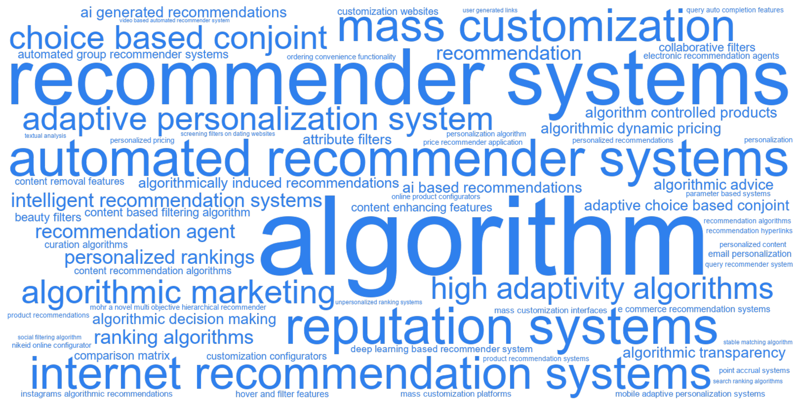
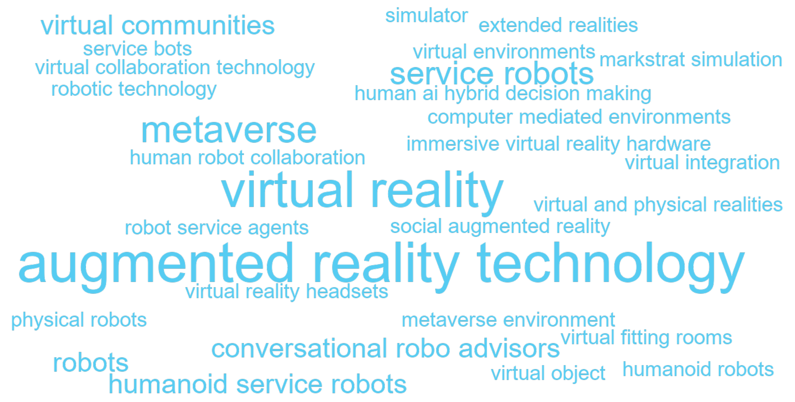
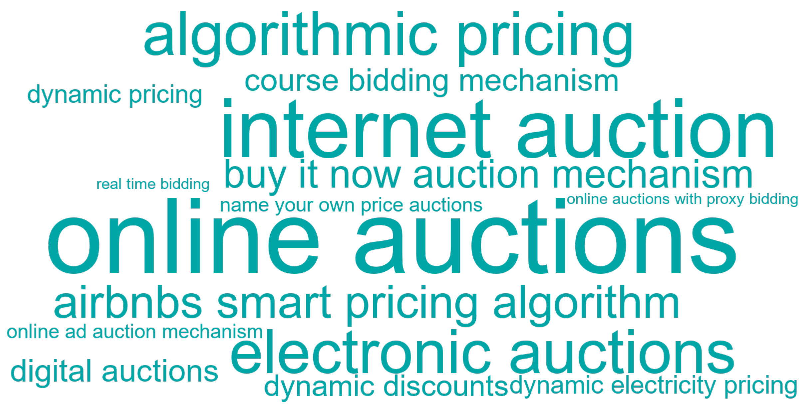
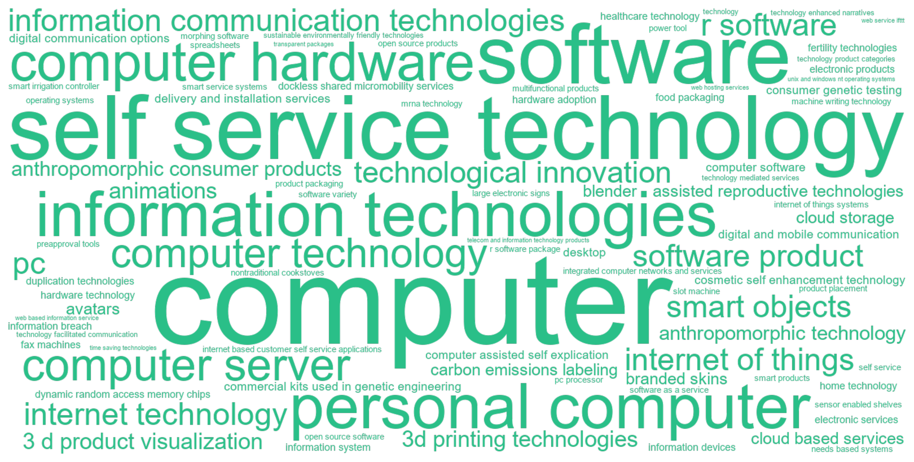
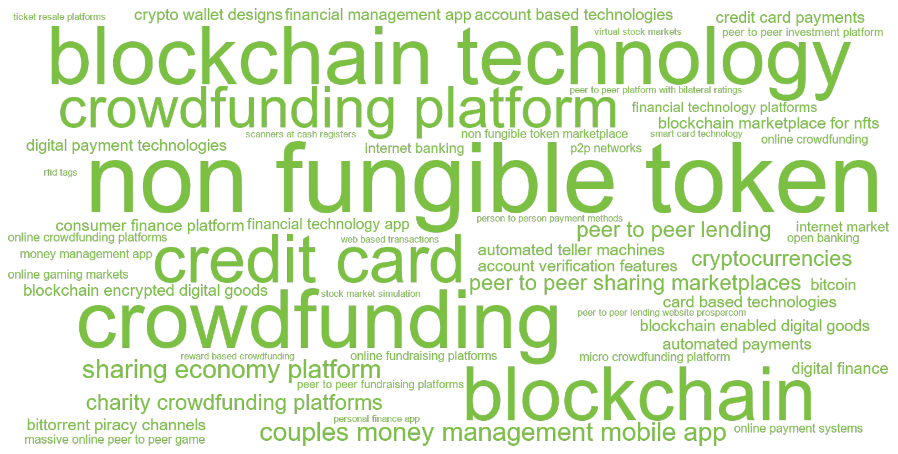
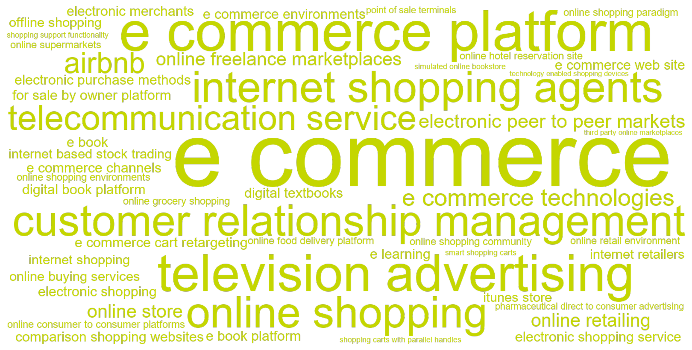
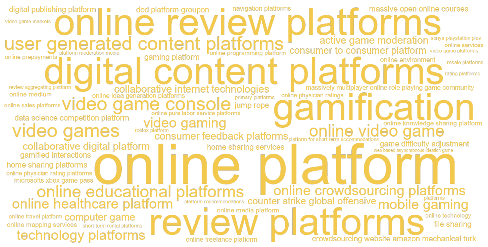
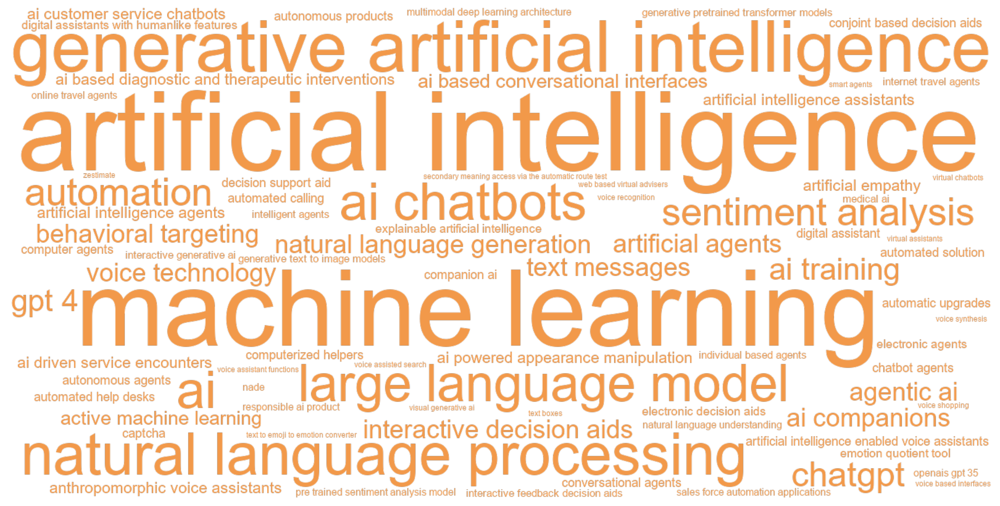
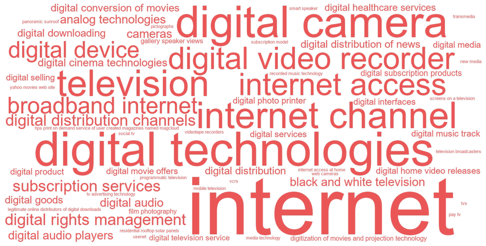
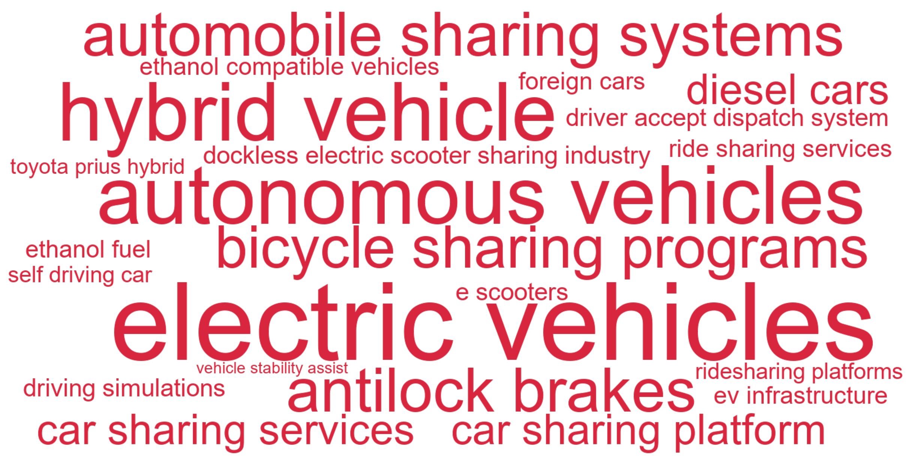
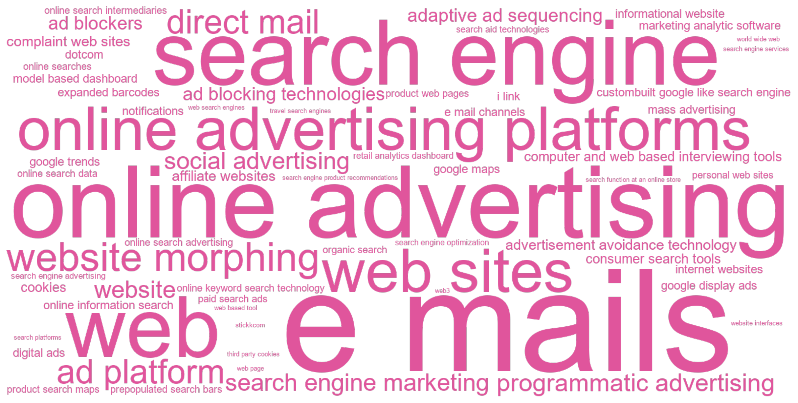
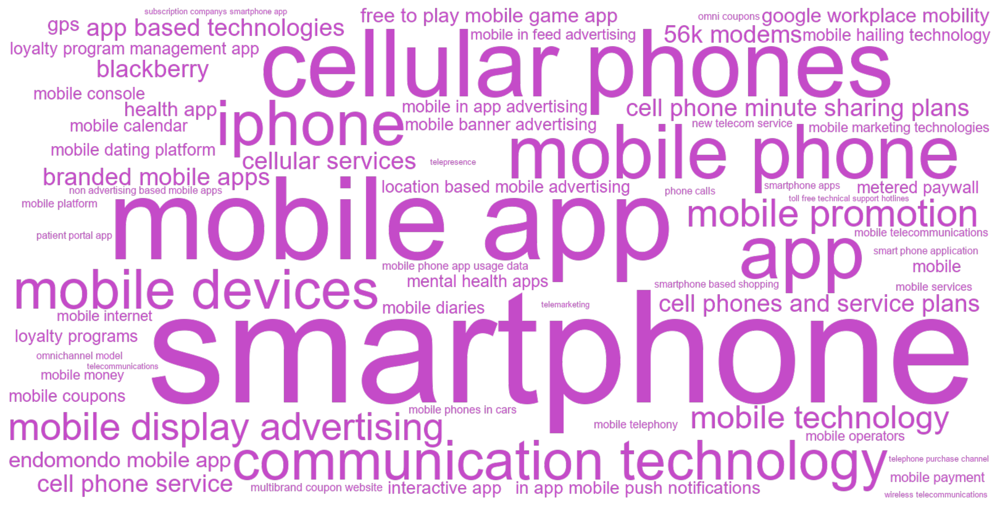
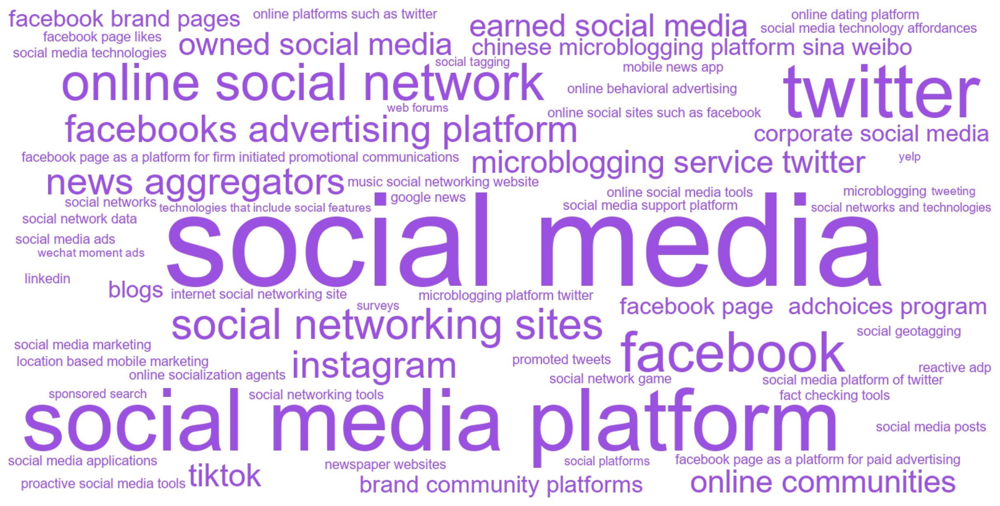
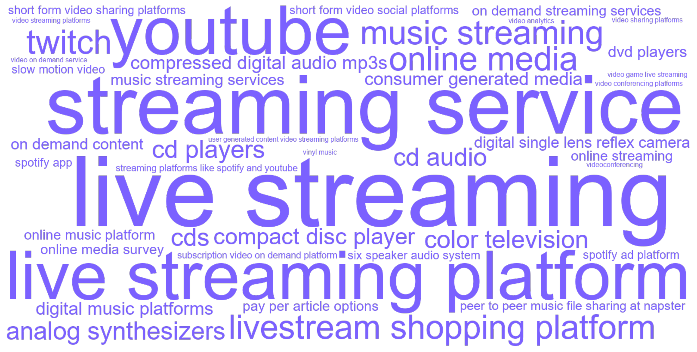
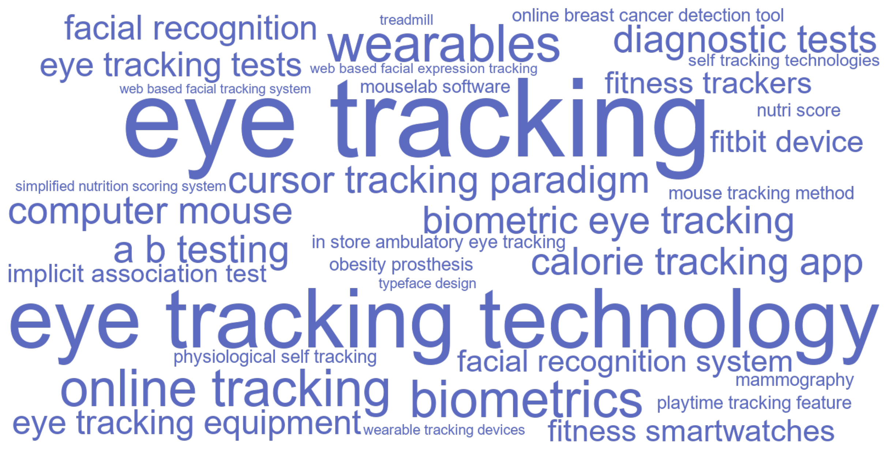
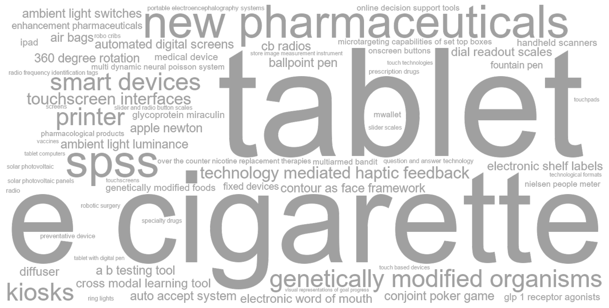
Journal Distribution
| Technology Cluster | Total | IJRM | JAMS | JCP | JCR | JM | JMR | MkSc |
|---|---|---|---|---|---|---|---|---|
| Algorithms & Recommendations | 103 (6.5%) | 8 (7.8%)2 | 9 (8.7%) | 18 (17.5%)1 | 10 (9.7%) | 14 (13.6%) | 15 (14.6%) | 29 (28.2%) |
| AR, VR & Robots | 54 (3.4%) | 7 (13.0%) | 18 (33.3%)1 | 7 (13.0%) | 5 (9.3%) | 7 (13.0%) | 8 (14.8%) | 2 (3.7%)2 |
| Auctions & Pricing | 26 (1.6%) | 4 (15.4%) | 2 (7.7%) | 1 (3.8%) | 1 (3.8%) | 3 (11.5%) | 3 (11.5%) | 12 (46.2%)1 |
| Computers & Software | 134 (8.5%) | 23 (17.2%) | 17 (12.7%) | 12 (9.0%) | 20 (14.9%) | 20 (14.9%) | 19 (14.2%) | 23 (17.2%) |
| Crypto & Fintech | 95 (6.0%) | 29 (30.5%)1 | 9 (9.5%) | 5 (5.3%) | 13 (13.7%) | 11 (11.6%) | 15 (15.8%) | 13 (13.7%) |
| E-Commerce | 81 (5.1%) | 14 (17.3%) | 7 (8.6%) | 5 (6.2%) | 0 (0.0%)2 | 14 (17.3%) | 14 (17.3%) | 27 (33.3%)1 |
| Gaming & Digital Platforms | 106 (6.7%) | 19 (17.9%) | 13 (12.3%) | 3 (2.8%)2 | 6 (5.7%) | 17 (16.0%) | 18 (17.0%) | 30 (28.3%) |
| Generative AI | 225 (14.2%) | 48 (21.3%) | 42 (18.7%) | 25 (11.1%) | 22 (9.8%) | 33 (14.7%) | 20 (8.9%)2 | 35 (15.6%)2 |
| Internet & Broadcasting | 127 (8.0%) | 19 (15.0%) | 27 (21.3%) | 5 (3.9%) | 11 (8.7%) | 19 (15.0%) | 17 (13.4%) | 29 (22.8%) |
| Mobility & Transportation | 27 (1.7%) | 2 (7.4%) | 3 (11.1%) | 1 (3.7%) | 3 (11.1%) | 6 (22.2%) | 6 (22.2%) | 6 (22.2%) |
| Search & Advertising | 99 (6.3%) | 13 (13.1%) | 13 (13.1%) | 6 (6.1%) | 10 (10.1%) | 10 (10.1%) | 15 (15.2%) | 32 (32.3%)1 |
| Smartphones & Apps | 126 (8.0%) | 33 (26.2%)1 | 14 (11.1%) | 7 (5.6%) | 12 (9.5%) | 23 (18.3%) | 21 (16.7%) | 16 (12.7%)2 |
| Social Media | 182 (11.5%) | 25 (13.7%) | 36 (19.8%) | 7 (3.8%)2 | 16 (8.8%) | 36 (19.8%) | 27 (14.8%) | 35 (19.2%) |
| Streaming, Audio & Video | 57 (3.6%) | 15 (26.3%) | 6 (10.5%) | 1 (1.8%)2 | 3 (5.3%) | 5 (8.8%) | 6 (10.5%) | 21 (36.8%)1 |
| Tracking & Wearables | 56 (3.5%) | 5 (8.9%) | 4 (7.1%) | 5 (8.9%) | 10 (17.9%) | 7 (12.5%) | 18 (32.1%)1 | 7 (12.5%) |
| Other | 85 (5.4%) | 10 (11.8%) | 6 (7.1%)2 | 12 (14.1%) | 15 (17.6%) | 8 (9.4%) | 13 (15.3%) | 21 (24.7%) |

- Distribution of consumer technology mentions across the seven journals. Total gives the mentions of the technology cluster across all journals and its share of all mentions; the journal columns give the mentions of that cluster in the journal and its share of the cluster total. The marks are computed column-wise, on the journal’s own technology composition: 1 marks a technology cluster whose 95% credible interval lies entirely above its corpus-wide share, 2 one that lies entirely below it.
- Marks (
08_journal_technology_bayes.R): for each journal, 20,000 Dirichlet draws with concentrationbaseline * 16 + observed counts, wherebaselineis the corpus-wide share of each cluster across all journals. A cluster is marked 1 when the 2.5% quantile ofdraw - baselineis above 0 and 2 when the 97.5% quantile is below 0.
Bibliometric Analysis – What Citation does Each Technology Make?
| Technology Cluster | Algorithms & Recommendations | AR, VR & Robots | Auctions & Pricing | Computers & Software | Crypto & Fintech | E-Commerce | Gaming & Digital Platforms | Generative AI | Internet & Broadcasting | Mobility & Transportation | Search & Advertising | Smartphones & Apps | Social Media | Streaming, Audio & Video | Tracking & Wearables | Other | Average excl. own cluster |
|---|---|---|---|---|---|---|---|---|---|---|---|---|---|---|---|---|---|
| Algorithms & Recommendations | 185(40.7%, 10.42) | 19(4.2%, 1.91) | 5(1.1%, 2.43) | 22(4.8%, 0.98) | 9(2%, 0.87) | 11(2.4%, 0.55) | 8(1.8%, 0.37) | 89(19.6%, 2.69) | 17(3.7%, 0.46) | 2(0.4%, 1) | 30(6.6%, 1.27) | 8(1.8%, 0.3) | 33(7.3%, 0.88) | 4(0.9%, 0.36) | 7(1.5%, 0.82) | 5(1.1%, 0.44) | 3.9% |
| AR, VR & Robots | 18(5.1%, 1.31) | 113(31.9%, 14.5) | 0(0%, 0) | 14(4%, 0.82) | 6(1.7%, 0.74) | 17(4.8%, 1.11) | 7(2%, 0.41) | 78(22%, 3.02) | 16(4.5%, 0.56) | 1(0.3%, 0.75) | 11(3.1%, 0.6) | 15(4.2%, 0.71) | 40(11.3%, 1.36) | 7(2%, 0.8) | 3(0.8%, 0.44) | 8(2.3%, 0.92) | 4.5% |
| Auctions & Pricing | 3(4.9%, 1.25) | 0(0%, 0) | 35(57.4%, 126.62) | 0(0%, 0) | 8(13.1%, 5.7) | 1(1.6%, 0.37) | 0(0%, 0) | 2(3.3%, 0.45) | 3(4.9%, 0.62) | 0(0%, 0) | 3(4.9%, 0.95) | 2(3.3%, 0.56) | 2(3.3%, 0.4) | 0(0%, 0) | 0(0%, 0) | 2(3.3%, 1.32) | 2.8% |
| Computers & Software | 15(3.3%, 0.84) | 12(2.6%, 1.18) | 1(0.2%, 0.44) | 180(39.4%, 8.05) | 3(0.7%, 0.3) | 15(3.3%, 0.76) | 21(4.6%, 0.95) | 57(12.5%, 1.71) | 38(8.3%, 1.04) | 1(0.2%, 0.5) | 9(2%, 0.39) | 51(11.2%, 1.89) | 17(3.7%, 0.45) | 9(2%, 0.8) | 8(1.8%, 0.99) | 20(4.4%, 1.76) | 4.1% |
| Crypto & Fintech | 8(2.5%, 0.64) | 8(2.5%, 1.14) | 2(0.6%, 1.32) | 9(2.8%, 0.57) | 138(42.7%, 18.57) | 9(2.8%, 0.65) | 30(9.3%, 1.91) | 26(8%, 1.1) | 17(5.3%, 0.67) | 3(0.9%, 2.25) | 14(4.3%, 0.83) | 11(3.4%, 0.57) | 31(9.6%, 1.16) | 9(2.8%, 1.11) | 6(1.9%, 1.04) | 2(0.6%, 0.24) | 3.8% |
| E-Commerce | 27(7.7%, 1.97) | 3(0.9%, 0.41) | 5(1.4%, 3.09) | 22(6.3%, 1.29) | 5(1.4%, 0.61) | 100(28.6%, 6.61) | 19(5.4%, 1.11) | 19(5.4%, 0.74) | 49(14%, 1.76) | 0(0%, 0) | 27(7.7%, 1.49) | 22(6.3%, 1.06) | 33(9.4%, 1.13) | 6(1.7%, 0.68) | 7(2%, 1.09) | 6(1.7%, 0.68) | 4.8% |
| Gaming & Digital Platforms | 18(3.6%, 0.92) | 8(1.6%, 0.73) | 2(0.4%, 0.88) | 33(6.5%, 1.33) | 9(1.8%, 0.78) | 37(7.3%, 1.69) | 162(32.1%, 6.6) | 16(3.2%, 0.44) | 38(7.5%, 0.94) | 5(1%, 2.5) | 30(6%, 1.16) | 34(6.7%, 1.13) | 79(15.7%, 1.89) | 19(3.8%, 1.51) | 7(1.4%, 0.77) | 7(1.4%, 0.56) | 4.5% |
| Generative AI | 113(8.9%, 2.28) | 105(8.2%, 3.73) | 3(0.2%, 0.44) | 65(5.1%, 1.04) | 13(1%, 0.43) | 32(2.5%, 0.58) | 37(2.9%, 0.6) | 549(43.1%, 5.91) | 74(5.8%, 0.73) | 3(0.2%, 0.5) | 54(4.2%, 0.81) | 53(4.2%, 0.71) | 107(8.4%, 1.01) | 21(1.6%, 0.64) | 28(2.2%, 1.2) | 16(1.3%, 0.52) | 3.8% |
| Internet & Broadcasting | 24(4.8%, 1.23) | 8(1.6%, 0.73) | 3(0.6%, 1.32) | 38(7.6%, 1.55) | 9(1.8%, 0.78) | 31(6.2%, 1.43) | 31(6.2%, 1.27) | 28(5.6%, 0.77) | 189(37.9%, 4.76) | 4(0.8%, 2) | 30(6%, 1.16) | 23(4.6%, 0.78) | 36(7.2%, 0.87) | 23(4.6%, 1.83) | 7(1.4%, 0.77) | 15(3%, 1.2) | 4.1% |
| Mobility & Transportation | 1(1.6%, 0.41) | 0(0%, 0) | 0(0%, 0) | 3(4.8%, 0.98) | 2(3.2%, 1.39) | 7(11.3%, 2.61) | 7(11.3%, 2.32) | 2(3.2%, 0.44) | 5(8.1%, 1.02) | 24(38.7%, 96.75) | 1(1.6%, 0.31) | 5(8.1%, 1.37) | 0(0%, 0) | 2(3.2%, 1.27) | 0(0%, 0) | 3(4.8%, 1.91) | 4.1% |
| Search & Advertising | 17(4.5%, 1.15) | 4(1%, 0.45) | 4(1%, 2.21) | 15(3.9%, 0.8) | 5(1.3%, 0.57) | 16(4.2%, 0.97) | 21(5.5%, 1.13) | 17(4.5%, 0.62) | 43(11.3%, 1.42) | 1(0.3%, 0.75) | 134(35.1%, 6.78) | 27(7.1%, 1.2) | 49(12.8%, 1.54) | 16(4.2%, 1.67) | 8(2.1%, 1.15) | 5(1.3%, 0.52) | 4.3% |
| Smartphones & Apps | 13(2.1%, 0.54) | 6(1%, 0.45) | 3(0.5%, 1.1) | 57(9.3%, 1.9) | 6(1%, 0.43) | 24(3.9%, 0.9) | 29(4.7%, 0.97) | 28(4.5%, 0.62) | 57(9.3%, 1.17) | 3(0.5%, 1.25) | 37(6%, 1.16) | 244(39.6%, 6.69) | 54(8.8%, 1.06) | 9(1.5%, 0.6) | 18(2.9%, 1.59) | 28(4.5%, 1.8) | 4% |
| Social Media | 27(2.6%, 0.67) | 16(1.5%, 0.68) | 1(0.1%, 0.22) | 29(2.8%, 0.57) | 12(1.1%, 0.48) | 42(4%, 0.92) | 69(6.6%, 1.36) | 32(3%, 0.41) | 80(7.6%, 0.95) | 3(0.3%, 0.75) | 67(6.4%, 1.24) | 46(4.4%, 0.74) | 549(52.3%, 6.31) | 43(4.1%, 1.63) | 16(1.5%, 0.82) | 18(1.7%, 0.68) | 3.2% |
| Streaming, Audio & Video | 7(2.4%, 0.61) | 4(1.4%, 0.64) | 1(0.3%, 0.66) | 13(4.5%, 0.92) | 7(2.4%, 1.04) | 13(4.5%, 1.04) | 21(7.3%, 1.5) | 12(4.2%, 0.58) | 47(16.4%, 2.06) | 1(0.3%, 0.75) | 15(5.2%, 1) | 14(4.9%, 0.83) | 36(12.5%, 1.51) | 79(27.5%, 10.94) | 12(4.2%, 2.3) | 5(1.7%, 0.68) | 4.8% |
| Tracking & Wearables | 5(2.5%, 0.64) | 3(1.5%, 0.68) | 0(0%, 0) | 7(3.5%, 0.72) | 4(2%, 0.87) | 3(1.5%, 0.35) | 5(2.5%, 0.51) | 11(5.4%, 0.74) | 9(4.5%, 0.56) | 0(0%, 0) | 16(7.9%, 1.53) | 20(9.9%, 1.67) | 13(6.4%, 0.77) | 4(2%, 0.8) | 93(46%, 25.18) | 9(4.5%, 1.8) | 3.6% |
| Other | 5(2.1%, 0.54) | 12(5%, 2.27) | 1(0.4%, 0.88) | 18(7.5%, 1.53) | 0(0%, 0) | 11(4.6%, 1.06) | 7(2.9%, 0.6) | 12(5%, 0.69) | 20(8.3%, 1.04) | 2(0.8%, 2) | 14(5.8%, 1.12) | 21(8.7%, 1.47) | 19(7.9%, 0.95) | 8(3.3%, 1.31) | 9(3.7%, 2.03) | 82(34%, 13.56) | 4.4% |
- How the citations each technology cluster makes are distributed across the clusters. Cells report the number of citations the row cluster \(i\) makes to the column cluster \(j\), the cross-citation share \(CC_{ij}\) of all citations \(i\) makes within the corpus, and the ratio \(r_{ij} = CC_{ij} / \overline{CC}_j\), where \(\overline{CC}_j\) is the average share the fifteen other clusters direct at \(j\). A ratio of 1 means the row cluster gives the column cluster its usual amount of attention and 2 twice as much. Rows sum to 100%. The diagonal reports citations within the row cluster itself.
- Cross-citation share (
07_citation_network.R): citations of row cluster \(i\) to column cluster \(j\) divided by all citations row cluster \(i\) makes within the corpus. Articles mentioning several clusters are counted once under each cluster. - Ratio: the row share divided by the mean share that the other 15 clusters (row \(i\) excluded) direct at column \(j\), computed with
mean(cites_by_table_p[-a, a]).
Bibliometric Analysis – Whom is Each Technology Cited By?
| Technology Cluster | Algorithms & Recommendations | AR, VR & Robots | Auctions & Pricing | Computers & Software | Crypto & Fintech | E-Commerce | Gaming & Digital Platforms | Generative AI | Internet & Broadcasting | Mobility & Transportation | Search & Advertising | Smartphones & Apps | Social Media | Streaming, Audio & Video | Tracking & Wearables | Other | Average excl. own cluster |
|---|---|---|---|---|---|---|---|---|---|---|---|---|---|---|---|---|---|
| Algorithms & Recommendations | 185(38.1%, 9.74) | 18(3.7%, 1.29) | 3(0.6%, 1.3) | 15(3.1%, 0.79) | 8(1.6%, 0.56) | 27(5.6%, 1.57) | 18(3.7%, 0.71) | 113(23.3%, 2.08) | 24(4.9%, 0.92) | 1(0.2%, 0.33) | 17(3.5%, 0.95) | 13(2.7%, 0.46) | 27(5.6%, 0.69) | 7(1.4%, 0.48) | 5(1%, 0.67) | 5(1%, 0.41) | 4.1% |
| AR, VR & Robots | 19(5.9%, 1.51) | 113(35.2%, 12.28) | 0(0%, 0) | 12(3.7%, 0.94) | 8(2.5%, 0.88) | 3(0.9%, 0.25) | 8(2.5%, 0.48) | 105(32.7%, 2.92) | 8(2.5%, 0.47) | 0(0%, 0) | 4(1.2%, 0.33) | 6(1.9%, 0.32) | 16(5%, 0.62) | 4(1.2%, 0.42) | 3(0.9%, 0.6) | 12(3.7%, 1.5) | 4.3% |
| Auctions & Pricing | 5(7.6%, 1.94) | 0(0%, 0) | 35(53%, 115.22) | 1(1.5%, 0.38) | 2(3%, 1.05) | 5(7.6%, 2.13) | 2(3%, 0.58) | 3(4.5%, 0.4) | 3(4.5%, 0.84) | 0(0%, 0) | 4(6.1%, 1.66) | 3(4.5%, 0.77) | 1(1.5%, 0.18) | 1(1.5%, 0.52) | 0(0%, 0) | 1(1.5%, 0.61) | 3.1% |
| Computers & Software | 22(4.2%, 1.07) | 14(2.7%, 0.94) | 0(0%, 0) | 180(34.3%, 8.75) | 9(1.7%, 0.6) | 22(4.2%, 1.18) | 33(6.3%, 1.21) | 65(12.4%, 1.11) | 38(7.2%, 1.35) | 3(0.6%, 1) | 15(2.9%, 0.79) | 57(10.9%, 1.86) | 29(5.5%, 0.68) | 13(2.5%, 0.87) | 7(1.3%, 0.87) | 18(3.4%, 1.38) | 4.4% |
| Crypto & Fintech | 9(3.8%, 0.97) | 6(2.5%, 0.87) | 8(3.4%, 7.39) | 3(1.3%, 0.33) | 138(58.5%, 20.55) | 5(2.1%, 0.59) | 9(3.8%, 0.73) | 13(5.5%, 0.49) | 9(3.8%, 0.71) | 2(0.8%, 1.33) | 5(2.1%, 0.57) | 6(2.5%, 0.43) | 12(5.1%, 0.63) | 7(3%, 1.04) | 4(1.7%, 1.13) | 0(0%, 0) | 2.8% |
| E-Commerce | 11(3%, 0.77) | 17(4.6%, 1.6) | 1(0.3%, 0.65) | 15(4.1%, 1.05) | 9(2.4%, 0.84) | 100(27.1%, 7.6) | 37(10%, 1.92) | 32(8.7%, 0.78) | 31(8.4%, 1.58) | 7(1.9%, 3.17) | 16(4.3%, 1.17) | 24(6.5%, 1.11) | 42(11.4%, 1.4) | 13(3.5%, 1.21) | 3(0.8%, 0.53) | 11(3%, 1.22) | 4.9% |
| Gaming & Digital Platforms | 8(1.7%, 0.43) | 7(1.5%, 0.52) | 0(0%, 0) | 21(4.4%, 1.12) | 30(6.3%, 2.21) | 19(4%, 1.12) | 162(34.2%, 6.57) | 37(7.8%, 0.7) | 31(6.5%, 1.22) | 7(1.5%, 2.5) | 21(4.4%, 1.2) | 29(6.1%, 1.04) | 69(14.6%, 1.8) | 21(4.4%, 1.52) | 5(1.1%, 0.73) | 7(1.5%, 0.61) | 4.4% |
| Generative AI | 89(9.1%, 2.33) | 78(8%, 2.79) | 2(0.2%, 0.43) | 57(5.8%, 1.48) | 26(2.7%, 0.95) | 19(1.9%, 0.53) | 16(1.6%, 0.31) | 549(56.1%, 5.01) | 28(2.9%, 0.54) | 2(0.2%, 0.33) | 17(1.7%, 0.46) | 28(2.9%, 0.5) | 32(3.3%, 0.41) | 12(1.2%, 0.42) | 11(1.1%, 0.73) | 12(1.2%, 0.49) | 2.9% |
| Internet & Broadcasting | 17(2.4%, 0.61) | 16(2.3%, 0.8) | 3(0.4%, 0.87) | 38(5.4%, 1.38) | 17(2.4%, 0.84) | 49(7%, 1.96) | 38(5.4%, 1.04) | 74(10.5%, 0.94) | 189(26.9%, 5.04) | 5(0.7%, 1.17) | 43(6.1%, 1.66) | 57(8.1%, 1.39) | 80(11.4%, 1.4) | 47(6.7%, 2.32) | 9(1.3%, 0.87) | 20(2.8%, 1.14) | 4.9% |
| Mobility & Transportation | 2(3.8%, 0.97) | 1(1.9%, 0.66) | 0(0%, 0) | 1(1.9%, 0.48) | 3(5.7%, 2) | 0(0%, 0) | 5(9.4%, 1.81) | 3(5.7%, 0.51) | 4(7.5%, 1.41) | 24(45.3%, 75.5) | 1(1.9%, 0.52) | 3(5.7%, 0.97) | 3(5.7%, 0.7) | 1(1.9%, 0.66) | 0(0%, 0) | 2(3.8%, 1.54) | 3.7% |
| Search & Advertising | 30(6.1%, 1.56) | 11(2.2%, 0.77) | 3(0.6%, 1.3) | 9(1.8%, 0.46) | 14(2.8%, 0.98) | 27(5.5%, 1.54) | 30(6.1%, 1.17) | 54(11%, 0.98) | 30(6.1%, 1.14) | 1(0.2%, 0.33) | 134(27.2%, 7.4) | 37(7.5%, 1.28) | 67(13.6%, 1.67) | 15(3%, 1.04) | 16(3.3%, 2.2) | 14(2.8%, 1.14) | 4.8% |
| Smartphones & Apps | 8(1.3%, 0.33) | 15(2.5%, 0.87) | 2(0.3%, 0.65) | 51(8.6%, 2.19) | 11(1.8%, 0.63) | 22(3.7%, 1.04) | 34(5.7%, 1.09) | 53(8.9%, 0.8) | 23(3.9%, 0.73) | 5(0.8%, 1.33) | 27(4.5%, 1.23) | 244(40.9%, 7) | 46(7.7%, 0.95) | 14(2.3%, 0.8) | 20(3.4%, 2.27) | 21(3.5%, 1.42) | 3.9% |
| Social Media | 33(3%, 0.77) | 40(3.6%, 1.26) | 2(0.2%, 0.43) | 17(1.5%, 0.38) | 31(2.8%, 0.98) | 33(3%, 0.84) | 79(7.2%, 1.38) | 107(9.7%, 0.87) | 36(3.3%, 0.62) | 0(0%, 0) | 49(4.5%, 1.23) | 54(4.9%, 0.84) | 549(50%, 6.16) | 36(3.3%, 1.14) | 13(1.2%, 0.8) | 19(1.7%, 0.69) | 3.3% |
| Streaming, Audio & Video | 4(1.5%, 0.38) | 7(2.7%, 0.94) | 0(0%, 0) | 9(3.5%, 0.89) | 9(3.5%, 1.23) | 6(2.3%, 0.64) | 19(7.3%, 1.4) | 21(8.1%, 0.72) | 23(8.9%, 1.67) | 2(0.8%, 1.33) | 16(6.2%, 1.69) | 9(3.5%, 0.6) | 43(16.6%, 2.04) | 79(30.5%, 10.57) | 4(1.5%, 1) | 8(3.1%, 1.26) | 4.6% |
| Tracking & Wearables | 7(3.1%, 0.79) | 3(1.3%, 0.45) | 0(0%, 0) | 8(3.5%, 0.89) | 6(2.6%, 0.91) | 7(3.1%, 0.87) | 7(3.1%, 0.6) | 28(12.2%, 1.09) | 7(3.1%, 0.58) | 0(0%, 0) | 8(3.5%, 0.95) | 18(7.9%, 1.35) | 16(7%, 0.86) | 12(5.2%, 1.8) | 93(40.6%, 27.07) | 9(3.9%, 1.59) | 4% |
| Other | 5(2.2%, 0.56) | 8(3.5%, 1.22) | 2(0.9%, 1.96) | 20(8.7%, 2.22) | 2(0.9%, 0.32) | 6(2.6%, 0.73) | 7(3%, 0.58) | 16(6.9%, 0.62) | 15(6.5%, 1.22) | 3(1.3%, 2.17) | 5(2.2%, 0.6) | 28(12.1%, 2.07) | 18(7.8%, 0.96) | 5(2.2%, 0.76) | 9(3.9%, 2.6) | 82(35.5%, 14.43) | 4.3% |
- How the citations each technology cluster receives are distributed across the clusters. Cells report the number of citations the row cluster \(i\) receives from the column cluster \(j\), the cross-citation share \(CC_{ij}\) of all citations \(i\) receives within the corpus, and the ratio \(r_{ij} = CC_{ij} / \overline{CC}_j\), where \(\overline{CC}_j\) is the average share the fifteen other clusters receive from \(j\). A ratio of 1 means the row cluster draws its usual amount from the column cluster and 2 twice as much. Rows sum to 100%. The diagonal reports citations within the row cluster itself.
- Cross-citation share (
07_citation_network.R): citations row cluster \(i\) receives from column cluster \(j\) divided by all citations row cluster \(i\) receives within the corpus. Articles mentioning several clusters are counted once under each cluster. - Ratio: the row share divided by the mean share that the other 15 clusters (row \(i\) excluded) receive from column \(j\), computed with
mean(cited_by_table_p[-a, a]).
Early Adoption
Within-corpus citations: \(\beta_\text{early adoption} = -0.003 (p = .88)\)
Total citations: \(\beta_\text{early adoption} = 0.021 (p = .28)\)
| Cluster ID | Cluster | Within Corpus | Total |
|---|---|---|---|
| 1 | Algorithms & Recommendations | -0.108 (< .001) | -0.112 (< .001) |
| 2 | AR, VR & Robots | -0.196 (< .001) | -0.27 (< .001) |
| 3 | Auctions & Pricing | -0.098 (.011) | -0.102 (< .001) |
| 4 | Computers & Software | -0.05 (.005) | -0.118 (< .001) |
| 5 | Crypto & Fintech | -0.067 (.004) | -0.149 (< .001) |
| 6 | E-Commerce | -0.061 (.016) | -0.084 (< .001) |
| 7 | Gaming & Digital Platforms | -0.161 (< .001) | -0.289 (< .001) |
| 8 | Generative AI | -0.168 (< .001) | -0.269 (< .001) |
| 9 | Internet & Broadcasting | -0.063 (.001) | -0.105 (< .001) |
| 10 | Mobility & Transportation | -0.167 (.001) | -0.305 (< .001) |
| 11 | Search & Advertising | -0.078 (< .001) | -0.171 (< .001) |
| 12 | Smartphones & Apps | -0.042 (.06) | -0.144 (< .001) |
| 13 | Social Media | -0.256 (< .001) | -0.311 (< .001) |
| 14 | Streaming, Audio & Video | -0.158 (< .001) | -0.212 (< .001) |
| 15 | Tracking & Wearables | -0.126 (< .001) | -0.21 (< .001) |
| 16 | Other | -0.113 (< .001) | -0.189 (< .001) |
- Impact of early adoption within each technology cluster. Cells report the negative-binomial GAM coefficient for the early adoption score with its p-value in parentheses; the score is the publication year minus the year of the cluster’s earliest paper, so lower values indicate earlier adoption and a negative coefficient means earlier papers accumulate more citations. Within Corpus counts citations from other corpus articles, Total counts all citations.
- Early adoption score (
07_citation_network.R):PY - earliest_paper, the publication year minus the earliest publication year within the same technology cluster, so 0 is the first paper of the cluster. - Cluster citeability:
mean(global_citations)over all papers in the cluster, i.e. the cluster’s mean Scopus citation count, entered as a covariate only in the overall models. - Within Corpus is
LCS(local citation score, citations from other corpus articles) and Total isGCS(global citation score, all citations) from bibliometrix. Overall models adds(age, k)withage = 2026 - PY; per-cluster models regress on the score only.
Within- and Across-Cluster Citations
| Model | wi: Within Corpus | wi: Total | ac: Within Corpus | ac: Total |
|---|---|---|---|---|
| All clusters | 1.4 (< .001) | 1.9 (< .001) | 17.2 (< .001) | 17.78 (< .001) |
| Cluster ID | Cluster | wi: Within Corpus | wi: Total | ac: Within Corpus | ac: Total |
|---|---|---|---|---|---|
| 1 | Algorithms & Recommendations | 0.703 (.502) | 0.929 (.339) | 12.126 (.692) | 24.963 (.346) |
| 2 | AR, VR & Robots | 2.302 (.208) | 2.781 (.107) | -5.416 (.896) | -28.89 (.467) |
| 3 | Auctions & Pricing | 0.179 (.862) | 0.47 (.529) | 21.725 (.722) | -10.41 (.801) |
| 4 | Computers & Software | 6.593 (.164) | 11.862 (.001) | 26.638 (.041) | 1.285 (.894) |
| 5 | Crypto & Fintech | -1.002 (.656) | 1.678 (.344) | -1.416 (.971) | 86.484 (.008) |
| 6 | E-Commerce | 2.675 (.139) | 5.078 (.001) | 13.677 (.361) | -0.97 (.942) |
| 7 | Gaming & Digital Platforms | -0.671 (.622) | 2.105 (.127) | 17.693 (.074) | 7.879 (.526) |
| 8 | Generative AI | 5.753 (< .001) | 5.733 (< .001) | 7.464 (.66) | 3.8 (.83) |
| 9 | Internet & Broadcasting | 2.912 (.301) | -0.351 (.879) | 15.875 (.029) | 17.825 (.003) |
| 10 | Mobility & Transportation | -5.571 (.08) | -1.596 (.417) | -81.132 (.327) | 50.388 (.421) |
| 11 | Search & Advertising | -0.36 (.818) | 1.727 (.162) | 4.977 (.542) | 25.567 (< .001) |
| 12 | Smartphones & Apps | 4.101 (.107) | 0.966 (.584) | 31.4 (.118) | 40.701 (.01) |
| 13 | Social Media | 3.281 (.001) | 4.895 (< .001) | -1.686 (.873) | 19.397 (.072) |
| 14 | Streaming, Audio & Video | 0.977 (.674) | -1.256 (.589) | -16.052 (.631) | -29.971 (.362) |
| 15 | Tracking & Wearables | -0.627 (.692) | 0.89 (.406) | 18.988 (.674) | 43.221 (.14) |
| 16 | Other | -1.129 (.55) | -2.066 (.129) | 109.732 (.001) | 29.871 (.225) |
- Impact of citing within and across technology clusters. Cells report the negative-binomial GAM coefficient with its p-value in parentheses, from models controlling for publication age with a smooth. wi is the standardized number of citations a paper makes to its own cluster, ac the standardized number it makes to other clusters, each divided by the papers available to be cited at that point. Within Corpus counts citations from other corpus articles, Total counts all citations.
- wi and ac (
07_citation_network.R):wi_clusteris the number of citations a paper makes to corpus papers in its own cluster andac_clusterthe number to corpus papers in other clusters, summed overcitation_countper citing paper and cluster. - Standardization:
wi_cluster_std = wi_cluster / publications_wi, wherepublications_wiis the cumulative number of corpus papers in the same cluster published before the paper’s year;ac_cluster_std = ac_cluster / publications_ac, wherepublications_acis the cumulative number of corpus papers in all other clusters published before that year. Papers with an infinite value (no earlier papers available) are dropped. - Cluster citeability:
mean(global_citations)over all papers in the cluster, entered as a covariate only in the overall models. Within Corpus isLCS, Total isGCS; all models adds(age, k)withage = 2026 - PY.
Coverage Gap and Rank Order
| Technology cluster | Academic share | Media share | Gap | Ratio | Mark |
|---|---|---|---|---|---|
| AR, VR & Robots | 3.72% | 2.18% | +1.5 | 1.70 | Credibly higher |
| Algorithms & Recommendations | 6.58% | 1.32% | +5.3 | 4.97 | Credibly higher |
| Auctions & Pricing | 1.29% | 0.02% | +1.3 | 57.10 | Credibly higher |
| Computers & Software | 7.01% | 9.21% | -2.2 | 0.76 | Credibly lower |
| Crypto & Fintech | 6.22% | 3.15% | +3.1 | 1.97 | Credibly higher |
| E-Commerce | 4.51% | 1.10% | +3.4 | 4.11 | Credibly higher |
| Gaming & Digital Platforms | 7.15% | 2.37% | +4.8 | 3.02 | Credibly higher |
| Generative AI | 15.52% | 5.44% | +10.1 | 2.85 | Credibly higher |
| Internet & Broadcasting | 6.22% | 16.79% | -10.6 | 0.37 | Credibly lower |
| Mobility & Transportation | 1.79% | 0.73% | +1.1 | 2.45 | Credibly higher |
| Search & Advertising | 5.94% | 7.61% | -1.7 | 0.78 | Credibly lower |
| Smartphones & Apps | 8.08% | 10.80% | -2.7 | 0.75 | Credibly lower |
| Social Media | 12.95% | 21.42% | -8.5 | 0.60 | Credibly lower |
| Streaming, Audio & Video | 3.79% | 6.47% | -2.7 | 0.59 | Credibly lower |
| Tracking & Wearables | 3.65% | 0.53% | +3.1 | 6.85 | Credibly higher |
| Other | 5.58% | 10.84% | -5.3 | 0.51 | Credibly lower |
| Technology cluster | Academic share | Academic rank | Media share | Media rank | Rank difference |
|---|---|---|---|---|---|
| AR, VR & Robots | 3.72% | 13 | 2.18% | 11 | -2 |
| Algorithms & Recommendations | 6.58% | 6 | 1.32% | 12 | +6 |
| Auctions & Pricing | 1.29% | 16 | 0.02% | 16 | +0 |
| Computers & Software | 7.01% | 5 | 9.21% | 5 | +0 |
| Crypto & Fintech | 6.22% | 7.5 | 3.15% | 9 | +1.5 |
| E-Commerce | 4.51% | 11 | 1.10% | 13 | +2 |
| Gaming & Digital Platforms | 7.15% | 4 | 2.37% | 10 | +6 |
| Generative AI | 15.52% | 1 | 5.44% | 8 | +7 |
| Internet & Broadcasting | 6.22% | 7.5 | 16.79% | 2 | -5.5 |
| Mobility & Transportation | 1.79% | 15 | 0.73% | 14 | -1 |
| Search & Advertising | 5.94% | 9 | 7.61% | 6 | -3 |
| Smartphones & Apps | 8.08% | 3 | 10.80% | 4 | +1 |
| Social Media | 12.95% | 2 | 21.42% | 1 | -1 |
| Streaming, Audio & Video | 3.79% | 12 | 6.47% | 7 | -5 |
| Tracking & Wearables | 3.65% | 14 | 0.53% | 15 | +1 |
| Other | 5.58% | 10 | 10.84% | 3 | -7 |
- Rank order of the technology clusters in the academic and the media corpus, 2008–2026. Academic share and media share are the pooled share of attention that each cluster received within all consumer technology mentions of its respective corpus, pooled across the whole period rather than averaged over years. Ranks are assigned on those shares, with 1 the cluster holding the largest share of its corpus. The rank difference is the media rank minus the academic rank, so positive values indicate a cluster the field ranks higher than the public does and negative values the reverse. Across the 16 clusters the two orderings agree at \(\rho = .634\) (\(p = .008\)) and \(\tau = .494\) (\(p = .008\)), with a mean absolute rank difference of 3.1 positions and a maximum of 7. Half ranks indicate ties.
- Shares and ranks (
10_rank_correlation.py): pooled academic share is the cluster’s summed academic mentions 2008–2026 divided by all academic technology mentions, pooled media share the same on media counts. Ranks userank(ascending=False, method="average"), rank difference ismedia_rank - academic_rank, and \(ho\) and $ au$ come fromscipy.stats.spearmanrandkendalltauon the two rank vectors. - Ratio and Mark (
07_gap_analysis.py): ratio is the cluster’s pooled academic share divided by its pooled media share. Mark: 20,000 Dirichlet draws with concentrationbaseline * 16 + academic counts, wherebaselineis the media share vector; Credibly higher when the 2.5% percentile ofdraw / baselineis above 1, Credibly lower when the 97.5% percentile is below 1. - Academic and media attention to consumer technology clusters, 2008–2026. Academic share and media share are the pooled share of attention that each cluster received within all consumer technology mentions of its respective corpus, pooled across the whole period rather than averaged over years. The gap is the academic share minus the media share, in percentage points. The ratio divides each cluster’s share of all academic technology mentions by its share of all media technology mentions; values above 1 indicate a cluster that draws more academic than media attention and values below 1 the reverse. For each cluster we draw a Dirichlet posterior of the academic share vector, using the media distribution as the baseline; Credibly higher marks a cluster whose 95% credible interval for the academic-to-media ratio lies entirely above 1, Credibly lower one that lies entirely below it.
Journal-Level Gap and Peak Alignment
| Technology cluster | Overall | International Journal of Research in Marketing | Journal of Consumer Psychology | Journal of Consumer Research | Journal of Marketing | Journal of Marketing Research | Journal of the Academy of Marketing Science | Marketing Science |
|---|---|---|---|---|---|---|---|---|
| AR, VR & Robots | +1.5% (-2) | +0.6% (-2) | +4.9% (+5) | +0.1% (-1.5) | +1.2% (-1) | +1.6% (-2) | +6.7% (+8) | -1.5% (-5) |
| Algorithms & Recommendations | +5.3% (+6) | +1.8% (+0) | +11.8% (+10) | +6.3% (+5.5) | +5.4% (+6) | +4.3% (+2) | +3.1% (+3.5) | +7.6% (+7) |
| Auctions & Pricing | +1.3% (+0) | +1.2% (+1) | -0.0% (+0) | -0.0% (+0.5) | +0.9% (+0) | -0.0% (+0) | +1.0% (+0) | +3.8% (+3.5) |
| Computers & Software | -2.2% (+0) | -1.3% (+0) | -1.1% (+1) | +2.2% (+2) | -3.9% (-3) | -2.6% (-2.5) | -1.8% (+0) | -4.1% (-5) |
| Crypto & Fintech | +3.1% (+1.5) | +7.1% (+6) | +1.9% (+0) | +6.0% (+4) | +1.2% (-0.5) | +3.9% (+3) | +1.3% (+0.5) | +0.6% (-3.5) |
| E-Commerce | +3.4% (+2) | +4.0% (+4) | -0.1% (-1) | -1.1% (-2.5) | +4.6% (+6) | +4.1% (+1) | +1.4% (+0) | +6.1% (+7) |
| Gaming & Digital Platforms | +4.8% (+6) | +5.1% (+4) | +0.7% (-1) | +2.2% (+0) | +5.3% (+6) | +6.1% (+5.5) | +3.0% (+3) | +6.9% (+6) |
| Generative AI | +10.1% (+7) | +13.5% (+7) | +17.8% (+7) | +9.8% (+7) | +9.9% (+6) | +3.5% (+5) | +15.2% (+7) | +5.9% (+6) |
| Internet & Broadcasting | -10.6% (-5.5) | -10.5% (-5) | -14.8% (-10) | -10.7% (-6.5) | -9.6% (-3) | -11.1% (-8) | -8.4% (-2) | -10.9% (-7) |
| Mobility & Transportation | +1.1% (-1) | -0.3% (-2) | +0.3% (+0) | +1.6% (+1.5) | +1.7% (-0.5) | +2.1% (-0.5) | +0.7% (-1) | +1.3% (-0.5) |
| Other | -5.3% (-7) | -7.3% (-8) | +0.3% (+0) | -0.9% (-1) | -7.0% (-8) | -5.2% (-7) | -7.9% (-8.5) | -4.3% (-4.5) |
| Search & Advertising | -1.7% (-3) | -3.3% (-4) | -2.6% (-3) | -3.8% (-5) | -3.3% (-3.5) | -1.0% (-1.5) | -3.7% (-4) | +3.0% (+3) |
| Smartphones & Apps | -2.7% (+1) | +0.7% (+2) | -3.7% (-2) | -3.2% (-2.5) | -0.3% (+1) | -1.4% (+2) | -4.9% (-2) | -6.3% (-7) |
| Social Media | -8.5% (-1) | -11.5% (-3) | -14.4% (-5) | -9.2% (-1) | -4.2% (+0) | -8.7% (+0) | -3.7% (-1) | -9.7% (+0) |
| Streaming, Audio & Video | -2.7% (-5) | -0.9% (-1) | -5.5% (-7) | -4.9% (-7) | -4.1% (-7.5) | -3.6% (-7.5) | -3.5% (-4.5) | +0.1% (-0.5) |
| Tracking & Wearables | +3.1% (+1) | +1.0% (+1) | +4.5% (+6) | +5.6% (+6.5) | +2.3% (+2) | +8.0% (+10.5) | +1.4% (+1) | +1.5% (+0.5) |
| Journal | Clusters | \(\rho\) | \(\tau\) | Median year difference |
|---|---|---|---|---|
| Journal of Marketing Research | 15 | .450 | .350 | -1.0 |
| Journal of Consumer Research | 14 | .385 | .264 | +1.0 |
| Journal of the Academy of Marketing Science | 16 | .384 | .253 | +0.5 |
| Marketing Science | 16 | .368 | .316 | -2.0 |
| International Journal of Research in Marketing | 16 | .134 | .122 | +1.0 |
| Journal of Marketing | 16 | −.007 | −.017 | -5.0 |
| Journal of Consumer Psychology | 15 | −.142 | −.091 | -1.0 |
- Attention gap per technology cluster, overall and by journal, 2008-2026. Each cell gives the academic minus media share in percentage points and, in parentheses, the media rank minus the academic rank; positive values mark clusters covered more than the media covers them.
- Rank-order agreement between the media peak years of the 16 technology clusters and each journal’s peak years, 2008-2026.
- Gap cells (
11_journals.py):100 * (pooled_academic_share - pooled_media_share)per cluster, with the academic share taken from the journal’s own mentions and the media share from all media counts; the parenthesised value ismedia_rank - academic_rankfrom10_rank_correlation.py. - Peak year: for each cluster the yearly attention series is smoothed with a centred 3-year rolling mean (
rolling(3, center=True, min_periods=1)) and the peak is the year with the maximum smoothed value. \(ho\) and $ au$ arespearmanrandkendalltaubetween the media peak years and the journal’s peak years across clusters with a peak in both, and the median year difference is the median ofjournal_peak - media_peak.